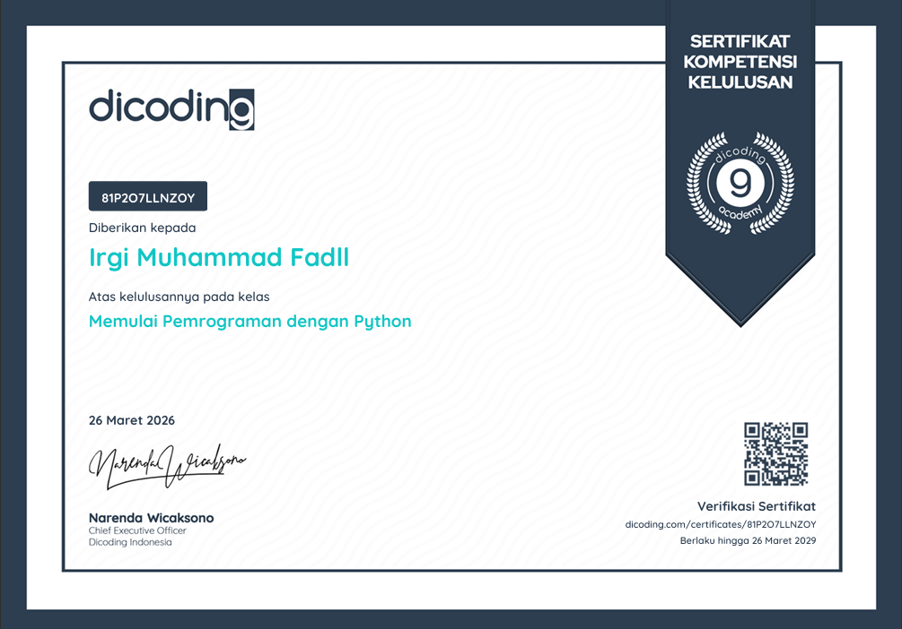
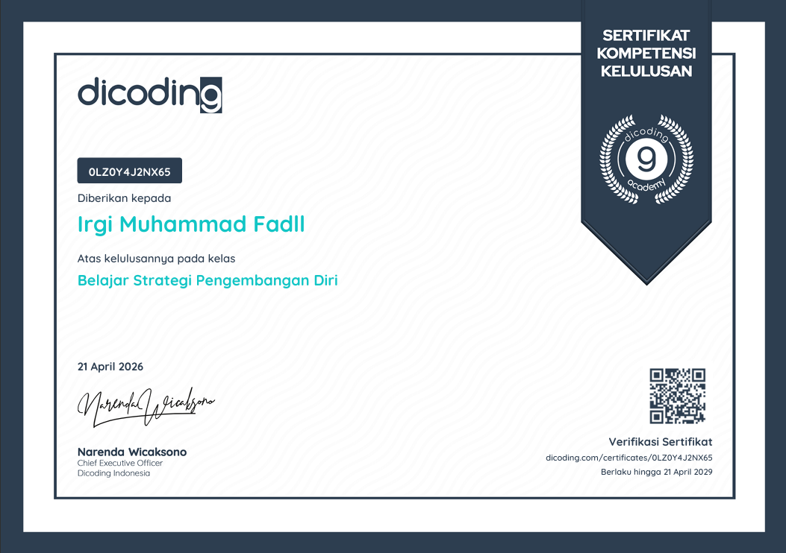
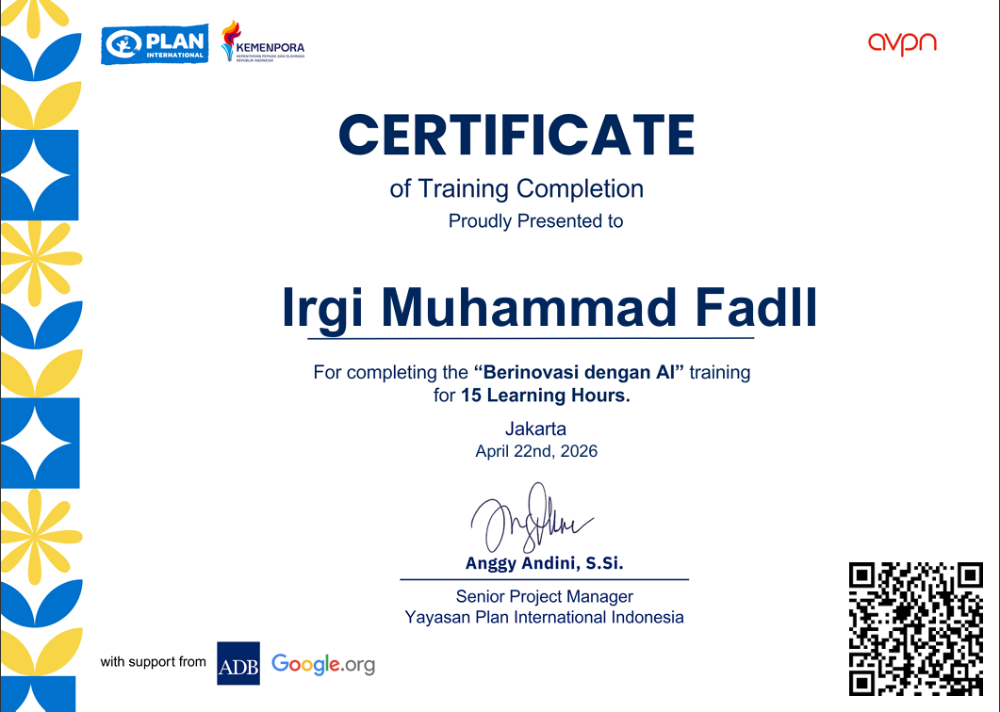
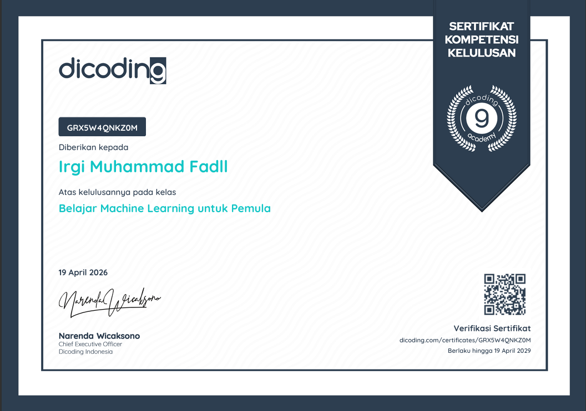
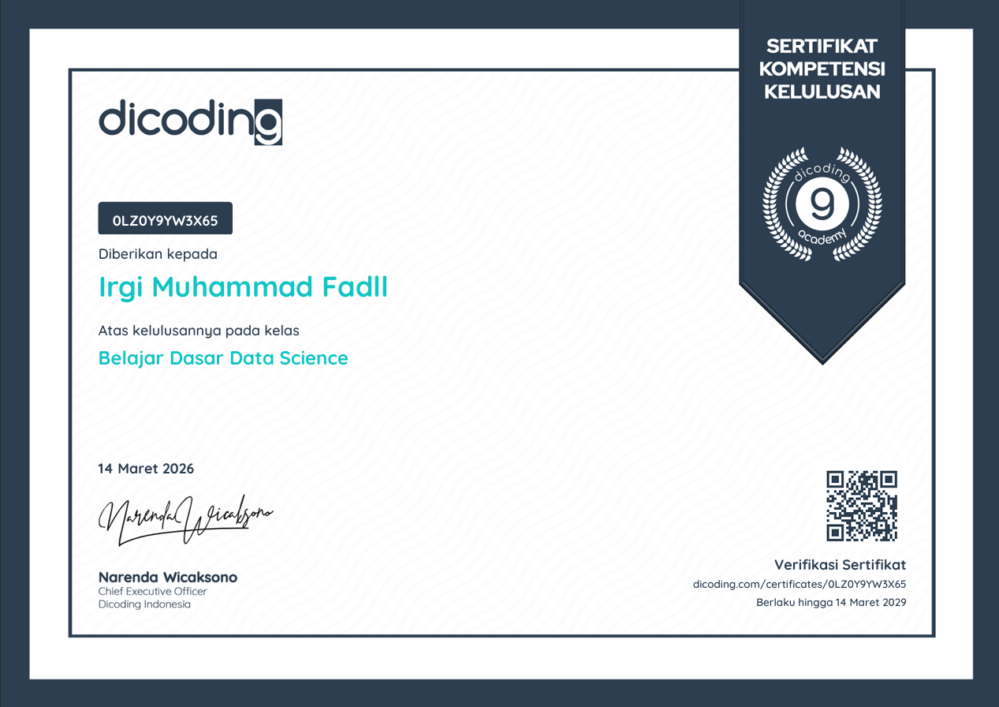
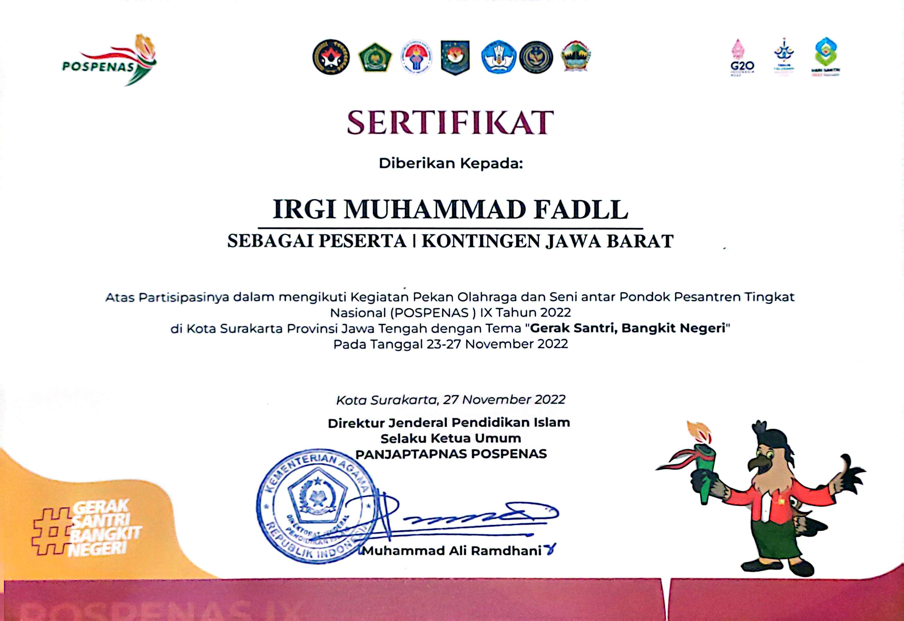

PORTFOLIO SHOWCASE
Eksplorasi proyek pengembangan, sertifikat penghargaan, dan pengalaman profesional saya.

Memulai Pemrograman dengan Python (2026)
Dicoding Indonesia x DBS Foundation
Belajar Dasar Structured Query Language (SQL) (2026)
Dicoding Indonesia x DBS Foundation

Belajar Strategi Pengembangan Diri (2026)
Dicoding Indonesia x DBS Foundation

Berinovasi dengan AI (2026)
Kemenpora x Yayasan Plan International Indonesia

Belajar Machine Learning untuk Pemula (2026)
Dicoding Indonesia x DBS Foundation

Belajar Dasar Data Science (2026)
Dicoding Indonesia x DBS Foundation

Peserta Kontingen Jawa Barat - Cabang Film Pendek POSPENAS IX (2022)
Direktorat Jenderal Pendidikan Islam, Kementerian Agama RI
Menjadi perwakilan kontingen Provinsi Jawa Barat dalam ajang Pekan Olahraga dan Seni antar Pondok Pesantren Tingkat Nasional (POSPENAS) IX
Organizations
KOORDINATOR GERAKAN PRAMUKA
Wakil PradanaBertanggung jawab mendampingi Pradana dalam memimpin, mengoordinasikan, dan mengelola manajemen tim Ambalan Hasan Muhammad di Pangkalan SMA Terpadu Riyadlul Ulum. Aktif merancang program kerja kepanduan, mengawasi pelaksanaan kegiatan, serta memastikan tertib administrasi organisasi berjalan efektif dengan predikat Sangat Baik.
Organisasi Santri Pesantren Condong (OSPC)
SekretarisBertanggung jawab penuh atas pengelolaan administrasi, surat-menyurat, dan pengarsipan dokumen untuk Organisasi Santri Pesantren Condong (organisasi intra-sekolah setingkat OSIS). Aktif menyusun proposal kegiatan, berkoordinasi dengan seluruh divisi kepengurusan, serta membantu memfasilitasi program kerja kedisiplinan dan pengembangan santri selama satu periode masa bakti.
Volunteer
Event Runner - GDG Cloud Bandung
Event Runner – Google Cloud DevFest BandungSupported the successful execution of Google Cloud DevFest Bandung by coordinating on-site operations and ensuring smooth event flow. Actively assisted event organizers, speakers, and participants by handling logistical needs, managing session transitions, and responding quickly to operational requirements.